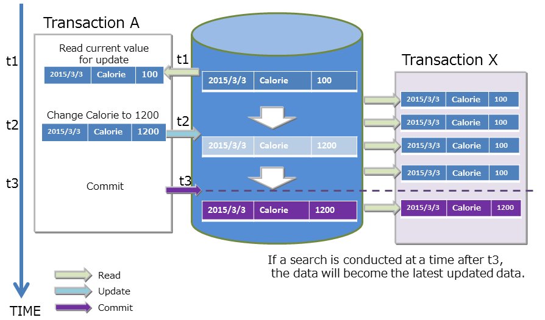

Table of Contents
3.5 Transactions and ACID¶
GridDB supports transaction processing on a container basis and ACID (atomictity, consistency, isolation, durability) characteristics which are generally known as transaction characteristics. The supporting functions in a transaction process are explained in detail below.
What is ACID?
Relational Databases long-reign of dominance can be somewhat attributed to them being ACID compliant. Financial transactions, for example, need ACID compliance to function with a degree of confidence and usability. Here is a more detailed look at each component of ACID:
Atomicty: All transactions are “all or nothing”. This means, if one part of the transaction fails, then the entire thing is canceled. Transactions only “complete” when the whole operation is finished. This protects against half-measures that can be caused by things like sudden failues, errors, etc.Consistency: Guarantees that data being changed must follow the established rules set by the database and its administrator.Isolation: Guarantees that transactions are committed serially (one after the other) even if transactions are coming in at the same time.Durability: Guarantees that committed transactions stay committed, even if an error occurs. Ensures the data is always safe.
With all of these attributes working in conjunction, database transactions have a certain guarantee that lend themselves well for more “important” duties (like finance or mission critical applications).
Starting and Ending a Transaction¶
When a row search (or update, etc.) is carried out on a container, a new transaction is started and this transaction ends when the update results of the data are committed or aborted.
[Memo]
- A commit is a process to confirm transaction information under processing to perpetuate the data.
- In GridDB, updated data of a transaction is stored as a transaction log by a commit process, and the lock that had been maintained will be released.
- An abort is a process to rollback (delete) all transaction data under processing.
- In GridDB, all data under processing are discarded and retained locks will also be released.
The initial action of a transaction is set in autocommit.
In autocommit, a new transaction is started every time a container is updated (data addition, deletion or revision) by the application, and this is automatically committed at the end of the operation. A transaction can be committed or aborted at the requested timing by the application by turning off autocommit.
A transaction recycle may terminate in an error due to a timeout in addition to being completed through a commit or abort. If a transaction terminates in an error due to a timeout, the transaction is aborted. The transaction timeout is the elapsed time from the start of the transaction. Although the initial value of the transaction timeout time is set in the definition file (gs_node.json), it can also be specified as a parameter when connecting to GridDB on an application basis.
Transaction Consistency Level¶
There are 2 types of transaction consistency levels, immediate consistency and eventual consistency. This can also be specified as a parameter when connecting to GridDB for each application. The default setting is immediate consistency.
- Immediate consistency: Container update results from other clients are reflected immediately at the end of the transaction. As a result, the latest details can be referenced all the time.
- Eventual consistency: Container update results from other clients may not be reflected immediately at the end of the transaction. As a result, there is a possibility that old details may be referred to.
Immediate consistency is valid in update operations and read operations. Eventual consistency is valid in read operations only. For applications which do not require the latest results to be read all the time, the reading performance improves when eventual consistency is specified.
Transaction Isolation Level¶
Conformity of the database contents need to be maintained all the time. When executing multiple transaction simultaneously, the following events will generally surface as issues.
- An event which involves uncommitted data written by a dirty read transaction being read by another transaction.
- An event which involves data read previously by a non-recurrent read transaction becoming unreadable.
Even if you try to read the data read previously by a transaction again, the previous data can no longer be read as the data has already been updated and committed by another transaction (the new data after the update will be read instead).
- An event in which the inquiry results obtained previously by a phantom read transaction can no longer be acquired.
Even if you try to execute an inquiry executed previously in a transaction again in the same condition, the previous results can no longer be acquired as the data satisfying the inquiry condition has already been changed, added and committed by another transaction (new data after the update will be acquired instead). In GridDB, ‘READ_COMMITTED’ is supported as a transaction isolation level. In READ_COMMITTED, the latest data confirmed data will always be read. When executing a transaction, this needs to be taken into consideration so that the results are not affected by other transactions. The isolation level is an indicator from 1 to 4 that shows how isolated the executed transaction is from other transactions (the extent that consistency can be maintained). The 4 isolation levels and the corresponding possibility of an event raised as an issue occurring during simultaneous execution are as follows.
Isolation level
Dirty read
Non-recurrent reading
Phantom read
READ_UNCOMMITTED
Possibility of occurrence
Possibility of occurrence
Possibility of occurrence
READ_COMMITTED
Safe
Possibility of occurrence
Possibility of occurrence
REPEATABLE_READ
Safe
Safe
Possibility of occurrence
SERIALIZABLE
Safe
Safe
Safe
In READ_COMMITED, if data read previously is read again, data that is different from the previous data may be acquired, and if an inquiry is executed again, different results may be acquired even if you execute the inquiry with the same search condition. This is because the data has already been updated and committed by another transaction after the previous read.
In GridDB, data that is being updated by MVCC is isolated.
MVCC¶
In order to realize READ_COMMITTED, ‘MVCC (Multi-Version Concurrency Control)’ has been adopted.
MVCC is a processing method that refers to the data prior to being updated instead of the latest data that is being updated by another transaction when a transaction sends an inquiry to the database. System throughput improves as the transaction can be executed concurrently by referring to the data prior to the update.
When the transaction process under execution is committed, other transactions can also refer to the latest data.

Lock¶
There is a data lock mechanism to maintain the consistency when there are competing container update requests from multiple transactions. The lock granularity differs depending on the type of container. In addition, the lock range changes depending on the type of operation in the database.
- Lock granularity
- A TimeSeries container is a data structure to hold data that is being generated with each passing moment and rarely includes cases in which the data is updated at a specific time.
- Collection data may include cases in which an existing ROW data is updated as it manages data just like a RDB table.
Based on the use case analysis of such a container, the lock granularity (smallest unit) adopted in GridDB is as follows. The lock granularity of a collection which is updated relatively more frequently is a ROW in order to improve the concurrent execution performance.
- Collection… Lock by ROW unit
- TimeSeries container… Locked by ROW collection
- In a row set, multiple rows are placed in a TimeSeries container by dividing a block into several data processing units. This data processing unit is known as a row set. It is a data management unit to process a large volume of TimeSeries containers at a high speed even though the data granularity is coarser than the lock granularity in a collection.
The lock granularity of a collection which is updated randomly more frequently compared to a TimeSeries container collection adopts a row unit in order to improve the concurrent execution performance.
- Lock range by database operations Container operations are not limited to just data registration and deletion but also include schema changes accompanying a change in data structure, index creation to improve speed of access, and other operations. The range of the lock differs between an operation on a specific row of the container and an operation on all rows of the container.
- Lock equivalent of a container unit
- Index operations (createIndex/dropIndex)
- Container deletion
- Schema change
- Lock in accordance with the lock granularity
- insert/update/remove
- get (forUpdate)
- Lock equivalent of a container unit
In a data operation on a row, a lock following the lock granularity is ensured.
- If there is competition in securing the lock, the subsequent transaction will be put in standby for securing the lock until the earlier transaction has been completed by a commit or rollback process and the lock is released.
- A standby for securing a lock can also be cancelled by a timeout besides completing the execution of the transaction.
Timeout Process¶
The timeout details that can be set differ between a NOSQL interface and a NewSQL interface.
- NoSQL timeoutThere are 2 types of timeout in a NoSQL that the application developer is kept informed of. There are 2 types of timeout, a transaction timeout that is related to the processing time limit of a transaction and a failover timeout that is related to the retry time of a recovery process when a failure occurs.
- TransactionTimeoutThe timer is started when access to the container subject to the process begins, and a timeout occurs when the specified time is exceeded. Timeout time prepared to delete the lock and memory from a transaction possessing an extended update lock (application searches for data in the update mode and does not delete the data when the lock is maintained) or a transaction maintaining a large amount of results for an extended time (application does not delete the memory of the cluster system for an extended time) and so on. Application is aborted upon reaching the transaction timeout. Besides the node definition file, a transaction timeout can also be specified in the application with a parameter during cluster connection. The specification in the application is prioritized. The default transaction timeout setting is 0 sec. 0 sec means that there is no timeout specified. In order to monitor an extended transaction, set the timeout time to meet the system requirements.
- FailoverTimeoutTimeout time during an error retry when a client connected to a node constituting a cluster which failed connects to a replacement node. If a new connection point is discovered in the retry process, the client application will not be notified of the error. Default value is 5 minutes. This can also be specified in the application by a parameter during cluster connection. Failover timeout is also used in timeout during initial connection.
- Both the transaction timeout and failover timeout can be set when connecting to a cluster using a GridDB object in the Java API or C API. See GridDB API Reference for details.